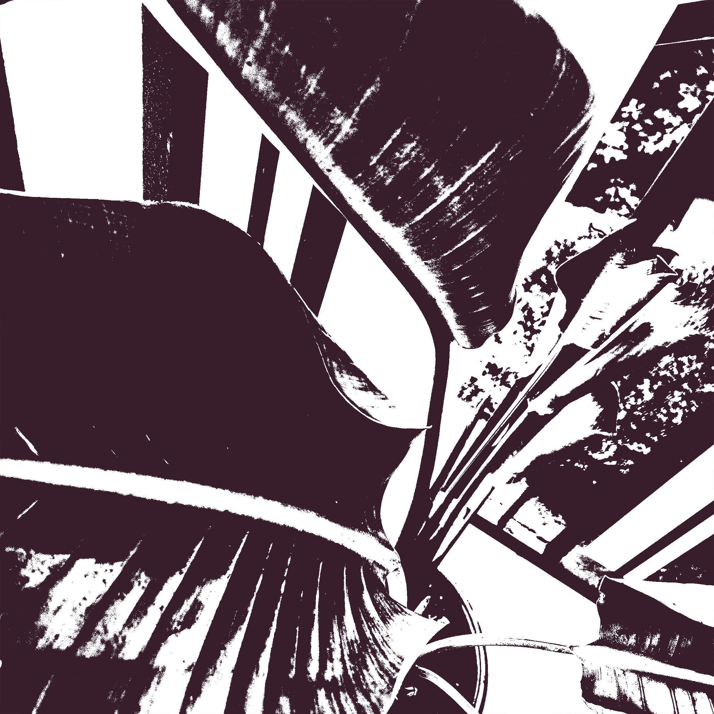
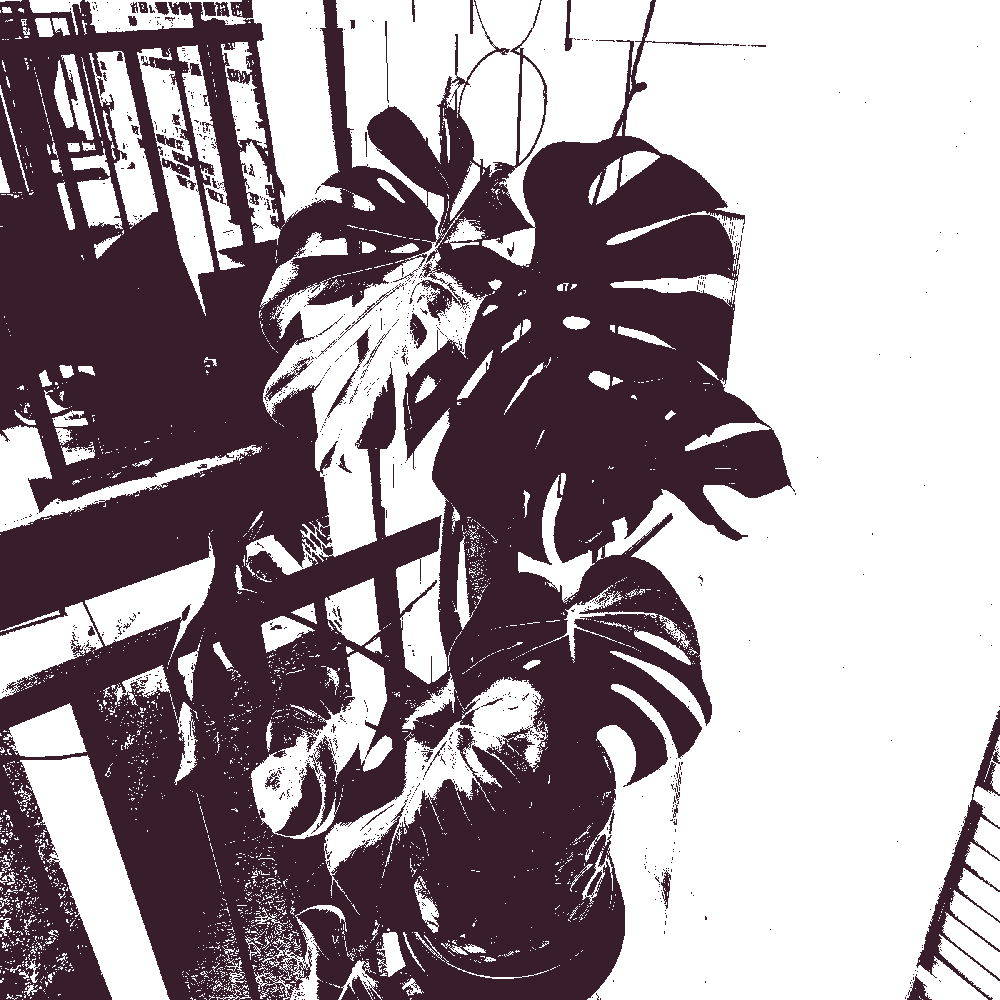
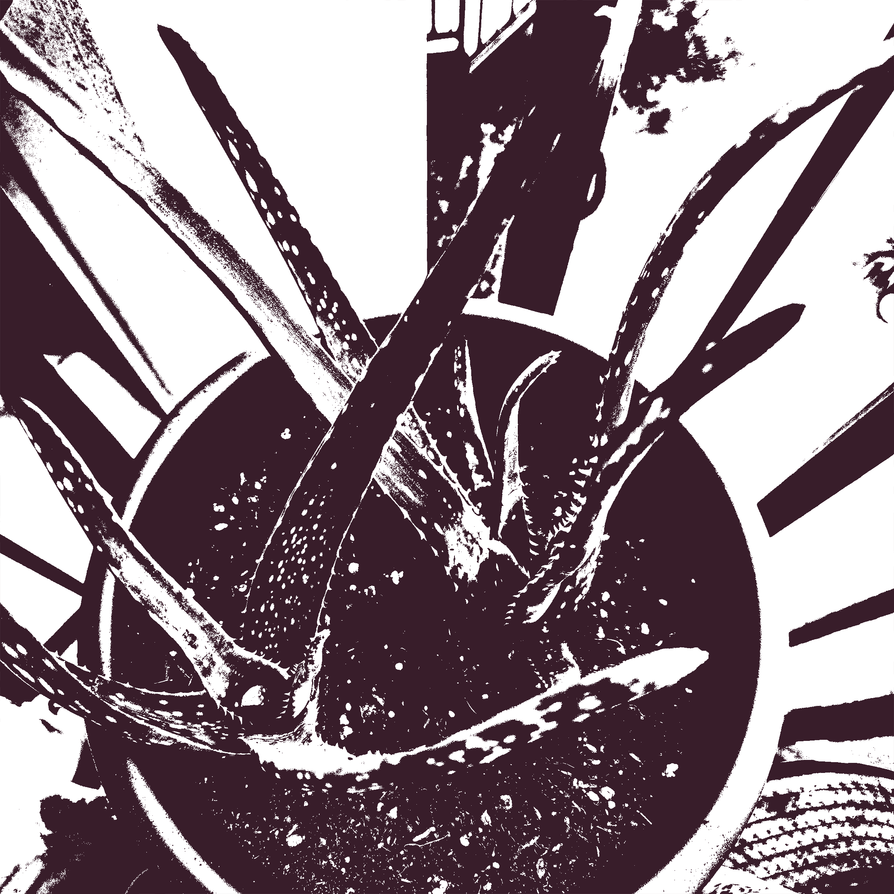
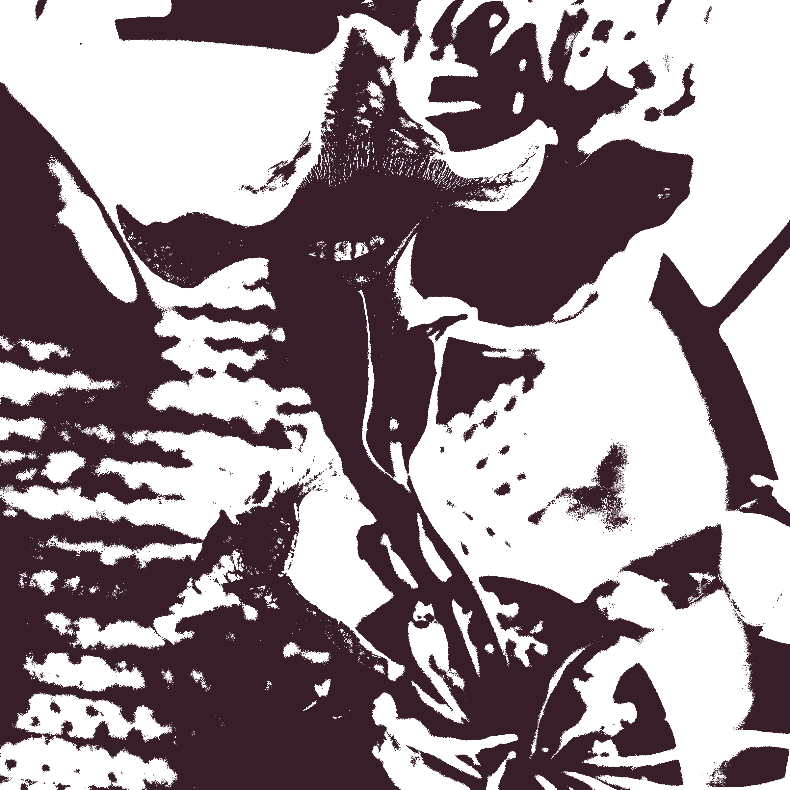
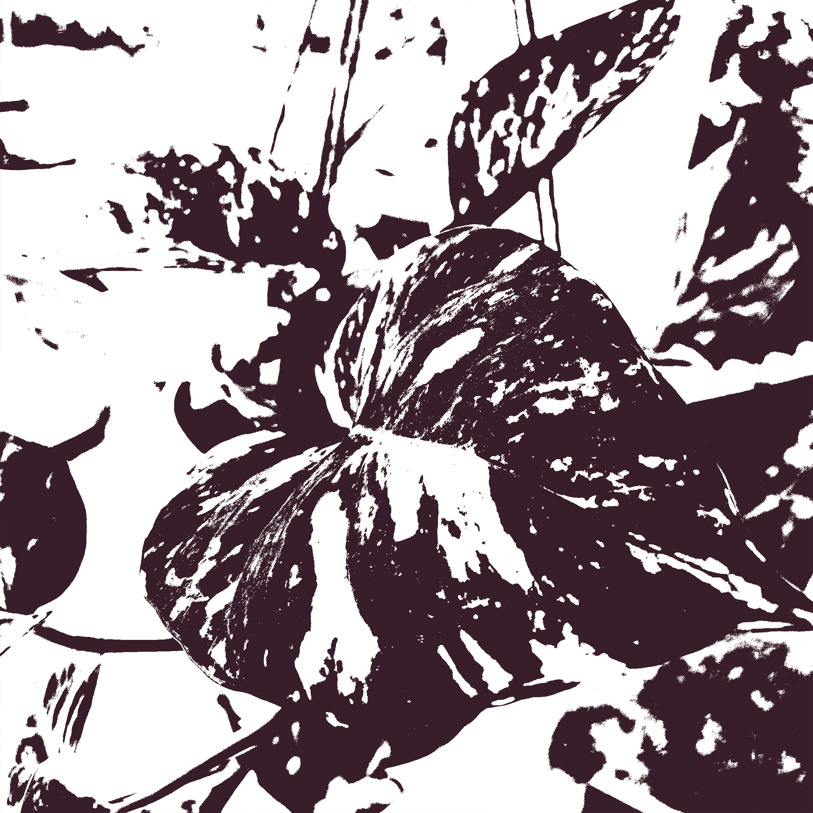

The White Bird of Paridise is a tropical plant native to the costal forests of Southern Africa. In its natural habitat, it can develop flowers that are dark blue and white. I like to keep mine outside on an east facing poarch during the summer, but it would probably do much better facing west.

The Monstera Deliciosa is native to the rainforests of Southern Mexico and Centra America, and is named after its delicious edible fruit. In their natural habitat, they climb large trees and can grow up to 70 feet tall! Their mature leaves form fenestrations to let light rach the entire plant.

The Aloe Vera plant is native to the south-easter Araibian Peninsula, and is known for its medical uses and high water content. I like to keep mine in about as much full sun as I can give, and only water once the soil is completely bone dry.

The Venus Fly Trap is native to North Carolina and is a carnivorous plant. They have to be kept in nutrient deficient soil and they need to sit in a drip tray full of water in full sun. They receive all their nutrients from the bugs they consume, the traps dying after about three catches. They are constantly replenishing their traps and have a winter dormancy.
The Sarracenia is a carnivorous pitcher plant native to North Carolina. They have to be kept in nutrient deficient soil and they need to sit in a drip tray full of water in full sun. They have specialized downward-facing hairs on the inner tops of the plant that force bugs down into the plant. This along with slippery walls and drugged nectar make them excellent hunters.

The Golden Pothos is a classic starter house plant native to Mo’orea. It has since migrated around the world and can be found in tropical environments. Although typically known as a medium-light plant, this plant thrives is bright, humid environments. I have mine on an east facing poarch.
